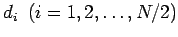
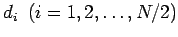

Inhalt Index DeskTop Bronstein

 Integraltransformationen Wavelet-Transformation Diskrete Wavelet-Transformation
Integraltransformationen Wavelet-Transformation Diskrete Wavelet-Transformation


Als Beispiel für eine diskrete Wavelet-Transformation wird die HAAR-Wavelet-Transformation beschrieben: Von einem Signal sind die Werte  gegeben. Aus diesen werden die Detailwerte  wie folgt berechnet:
gegeben. Aus diesen werden die Detailwerte  wie folgt berechnet:
Die Werte di werden abgespeichert, während auf die Werte si die Vorschrift (15.153) angewendet wird, d.h., in (15.153) werden die Werte fi durch die Werte si ersetzt. Diese Vorgehensweise wird fortgesetzt, so daß sich aus
| (15.154) |
schließlich eine Folge von Detailvektoren mit den Komponenten ergibt. Jeder Detailvektor enthält Informationen über Eigenschaften des Signals.
Hinweis: Für große Werte von N konvergiert die diskrete Wavelet-Transformation gegen die Integral-Wavelet-Transformation (15.150a).